Colección iniciada
Lectura y lectoescritura
Preparación antes de leer, rutas de lectura, comprensión, grafismo fonético, lenguaje escrito y acompañamiento familiar.
 RAÍCES PERÚFamilias y neurodiversidad
RAÍCES PERÚFamilias y neurodiversidad
Biblioteca RAÍCES
Organizamos nuestros estudios en colecciones de manuales visuales y recursos prácticos: fichas, cartas, láminas, mandalas, laberintos, tableros y actividades. La web muestra las posibilidades; cada conjunto completo se prepara y entrega de manera personalizada.
Explorar la biblioteca
Acceso cuidado
Los manuales y paquetes de recursos no se descargan desde la web. Si una familia, profesional o institución necesita uno, RAÍCES conversa sobre la edad, el objetivo, los apoyos y el contexto antes de preparar la versión correspondiente.
Antes de elegir un material
La Ruta de orientación RAÍCES ayuda a organizar la situación, conversar con la escuela y reconocer cuándo corresponde conectar con un servicio público o profesional.
Colecciones temáticas
Cada colección puede contener guías previas, manuales de actividades, rutas progresivas y versiones para familias o educadores.
Colección iniciada
Preparación antes de leer, rutas de lectura, comprensión, grafismo fonético, lenguaje escrito y acompañamiento familiar.
Primer manual disponible
Escucha responsable, ritmo, atención auditiva, usos cotidianos del sonido y criterios para elegir experiencias musicales.
Manual y guía de voz disponibles
Respiración, percepción corporal, pausas, música para acompañar y prácticas breves sin imponer calma.
Cinco manuales disponibles
Propiocepción, equilibrio, postura, coordinación bilateral, motricidad fina, cruce de línea media y movimiento con propósito.
Primer manual disponible
Ejercicios visuales, auditivos y corporales, preparación del entorno, descansos y progresiones ajustables.
Primer manual disponible
Tipos de memoria, técnicas, actividades, generalización, seguimiento y maneras de descubrir qué apoyo funciona mejor.
En desarrollo
Flexibilidad, planificación, secuencias, categorización, resolución de problemas y retos graduados.
En desarrollo
Lengua, boca, rostro, respiración, ritmo del habla y actividades respetuosas para practicar comunicación oral.
En desarrollo
Habilidades, prácticas, apoyos visuales, transferencia a situaciones reales y versiones adaptadas a cada contexto.
En desarrollo
Materiales generales sobre TDAH, autismo, perfiles diversos, entorno, autonomía y acompañamiento sin reducir a la persona a un diagnóstico.
Universo de recursos
Una necesidad puede acompañarse con un libro de orientación, una secuencia de actividades o un conjunto de piezas prácticas. RAÍCES selecciona el formato según la persona y el propósito.
Propuestas de recorrido visual, grafomotricidad, pausa creativa y elección de color, sin imponer una única forma de realizarlas.
Abrir primera serieRutas graduadas para exploración visual, planificación, coordinación y resolución de problemas.
Escenas, secuencias, vocabulario, observación, asociación, conversación y apoyos para anticipar.
Organizadores, rutinas, pasos, elecciones, registros y mapas para volver visible la información.
Preguntas, emociones, palabras, categorías, memoria, comunicación y juegos de turnos adaptables.
Actividades breves de atención, memoria, lenguaje, lectoescritura, coordinación y reflexión.
Rompecabezas, asociación, clasificación, secuencias y experiencias manipulativas para aprender haciendo.
Vocales, abecedario, sílabas, grafismo fonético, conciencia sonora y progresiones por nivel.
Ritmo, escucha, ondas, música y pausas guiadas con criterios claros de uso y cuidado.
Primera colección visible
Aquí encontrará orientación, criterios y vistas de los manuales. Los juegos y ejercicios digitales se realizan dentro de App RAÍCES.

6 a 9 años

6 a 9 años

10 a 12 años

13 a 17 años

Familias y educadores
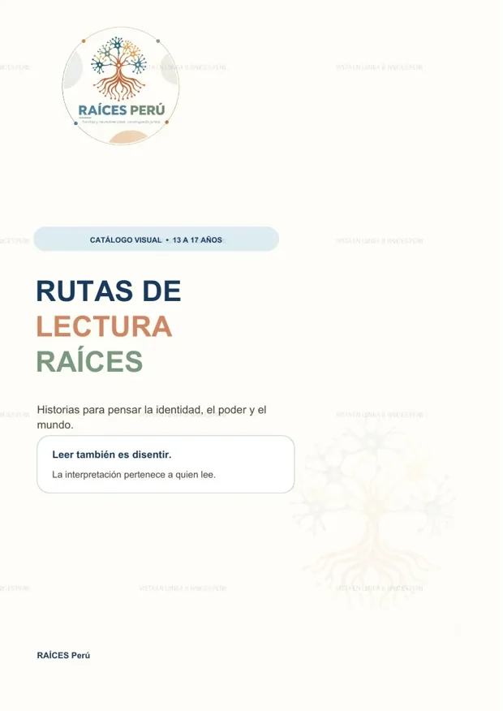
13 a 17 años
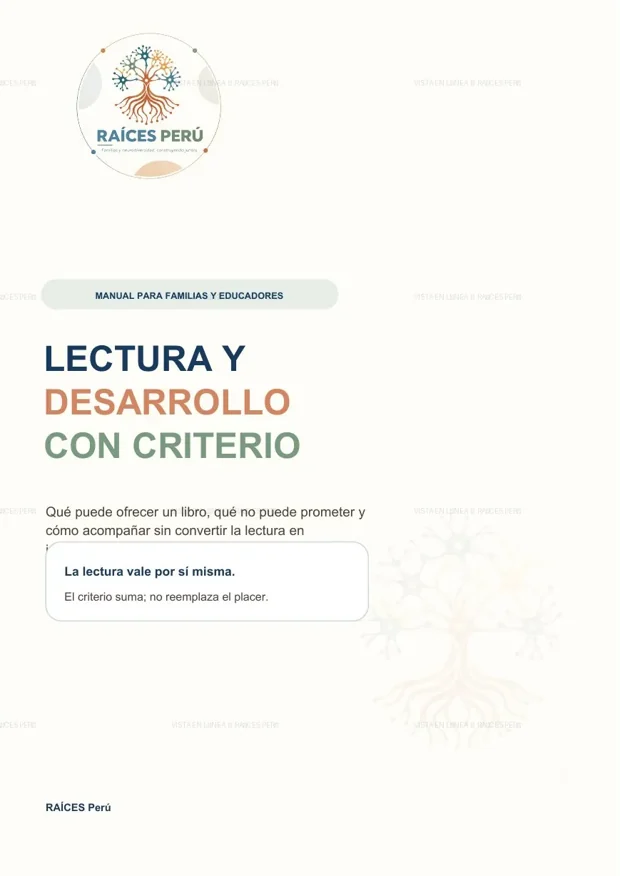
Familias y educadores
La práctica vive en la App
Las misiones de lectura, sílabas, comprensión y grafismo se agrupan por edad y dificultad dentro de la aplicación.
Segunda colección visible
Orientaciones para elegir, probar y observar experiencias sonoras sin promesas universales y con cuidado auditivo. Las pistas se escuchan exclusivamente desde App RAÍCES.
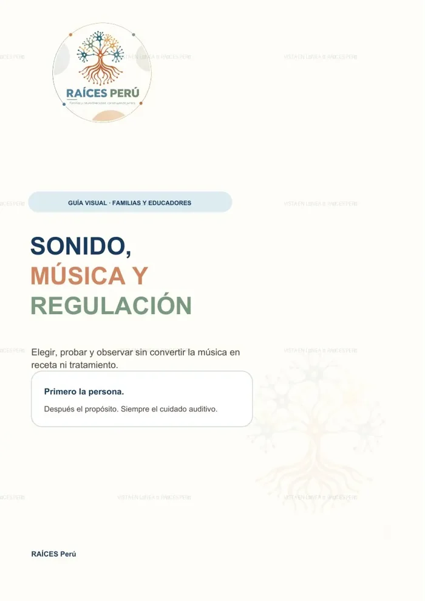
Familias y educadores
Tercera colección visible
Un nombre cercano para reunir respiración, percepción corporal, pausas y mindfulness sin exigir inmovilidad. La persona puede adaptar, pausar o detener cada experiencia.
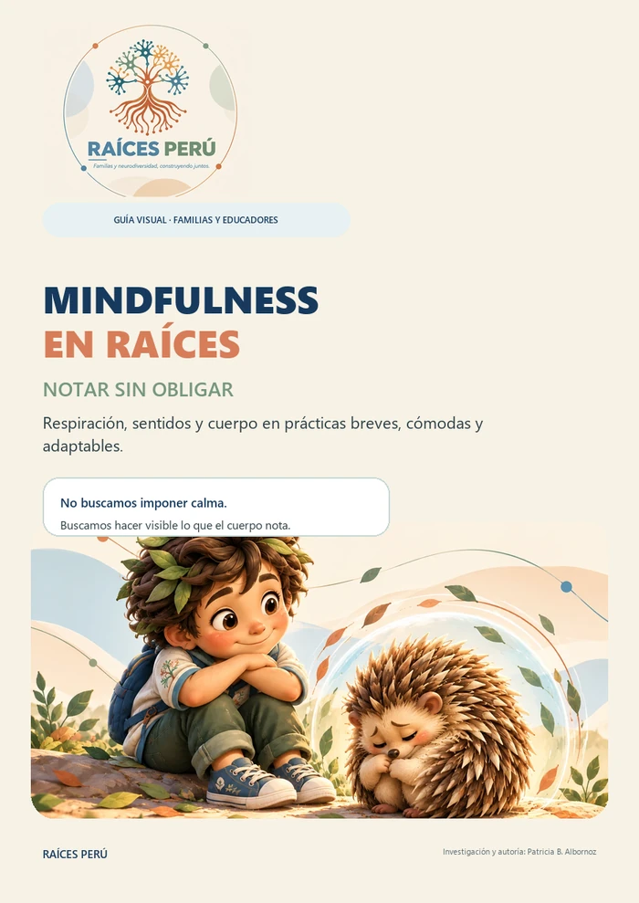
Familias y educadores
Orientación y catálogo
La Biblioteca explica objetivos, progresiones y formas de acompañar. Las láminas completas y el taller de color se entregan como producto o se usan en App RAÍCES.
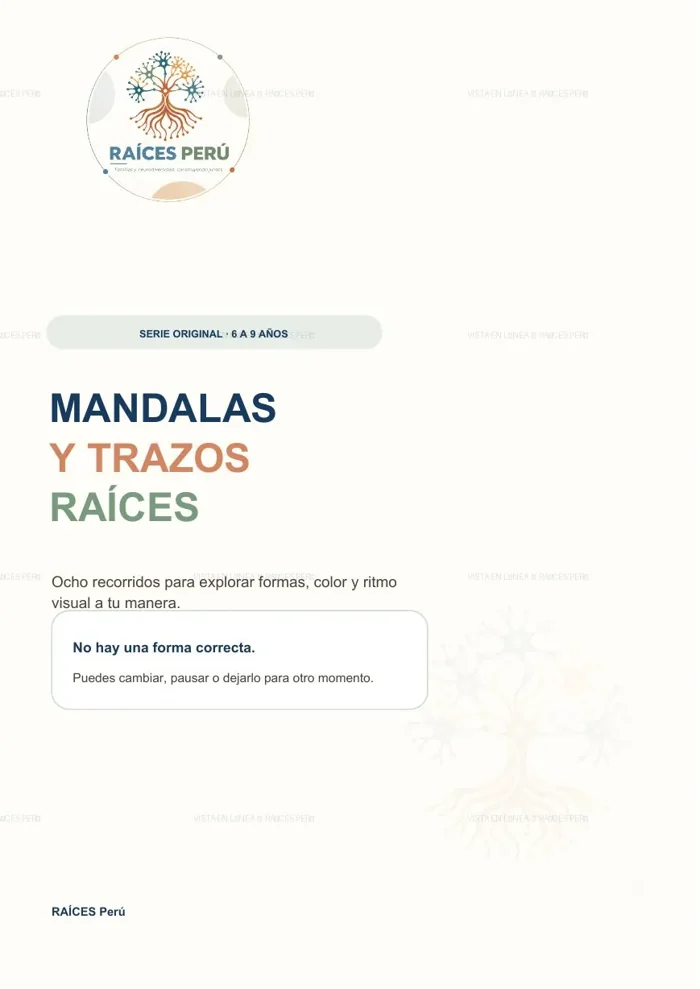
6 a 9 años · orientativo
Cuarta colección visible · cinco manuales
Orientación para explorar apoyo, equilibrio, tacto y coordinación con seguridad. Las misiones progresivas de manos y movimiento se realizan en App RAÍCES.
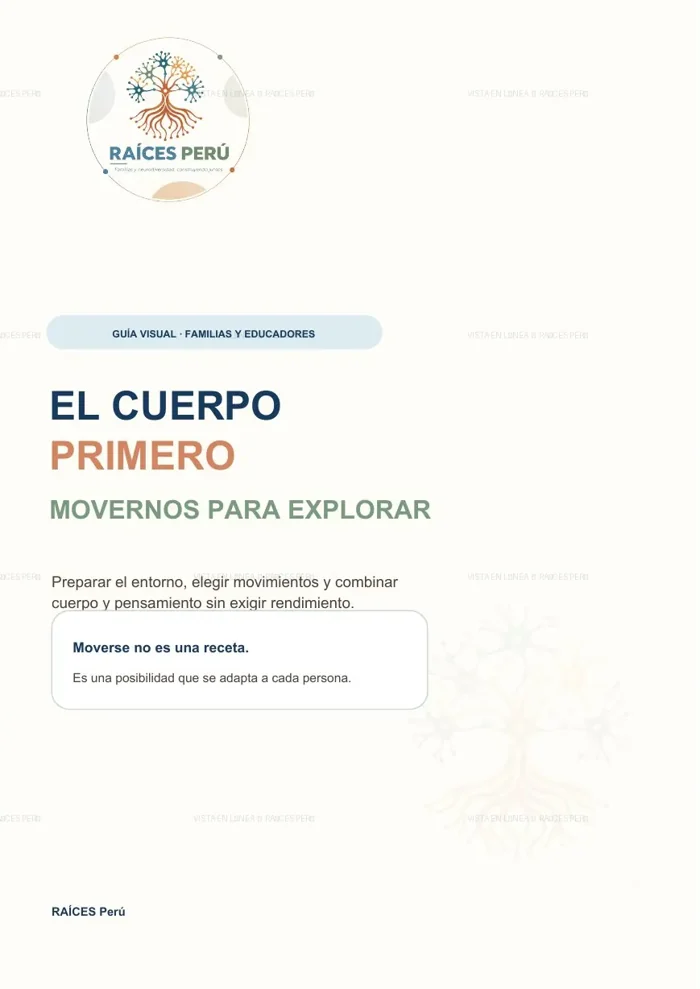
Familias y educadores
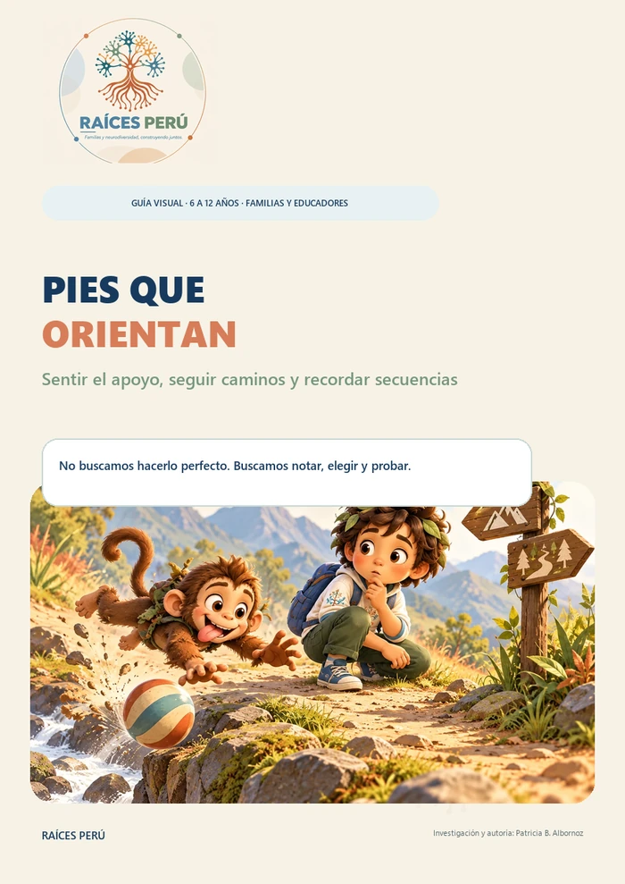
6 a 12 años · progresivo
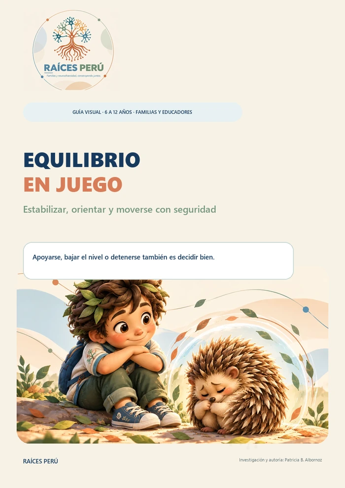
6 a 12 años · progresivo
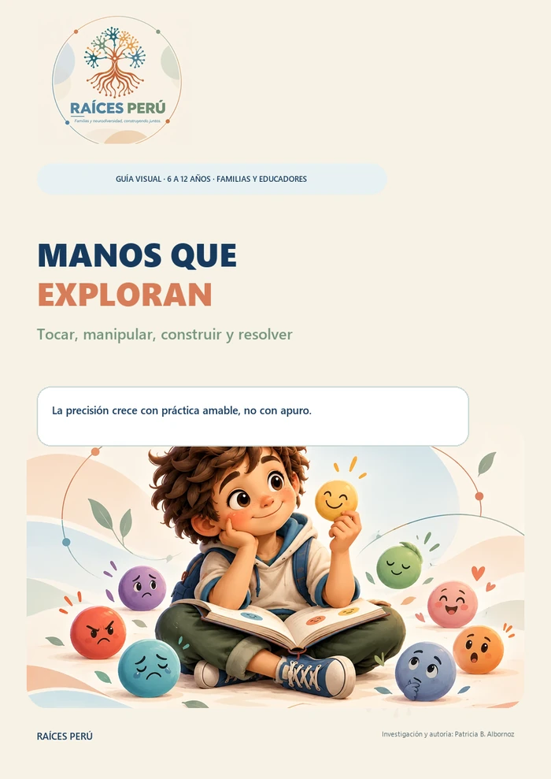
6 a 12 años · progresivo
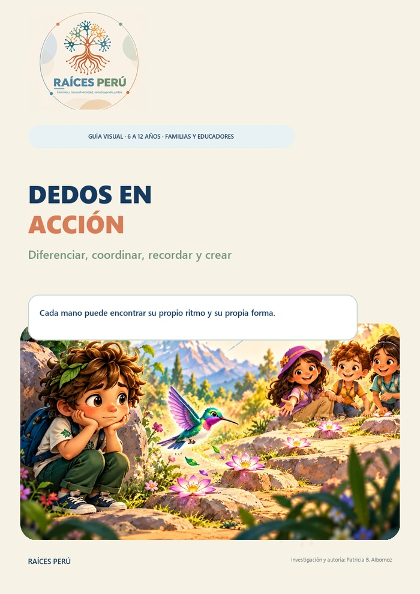
6 a 12 años · progresivo
¿Quiere practicar? La App organiza gimnasia cerebral, coordinación bilateral, equilibrio y manos por edad y nivel.
Abrir Cuerpo y movimientoQuinta colección visible
Información para preparar el entorno, graduar tareas, incluir descansos y observar qué apoyo funciona mejor.
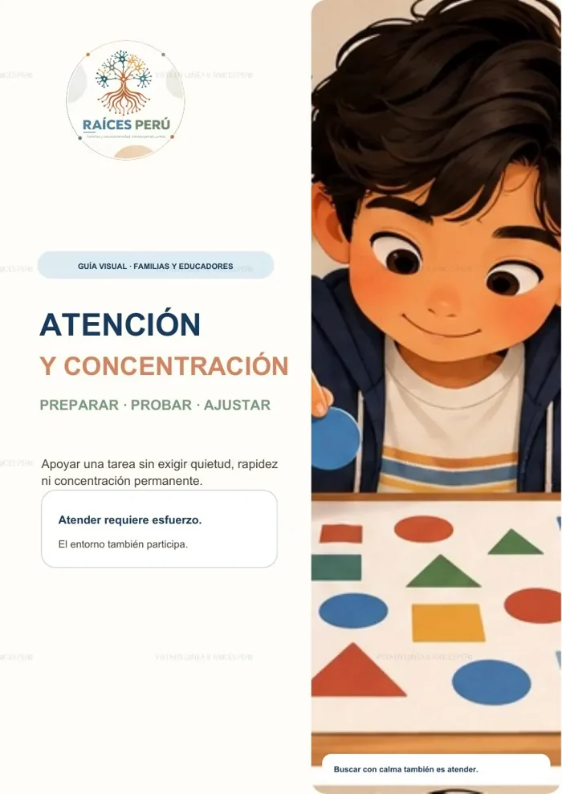
Familias y educadores
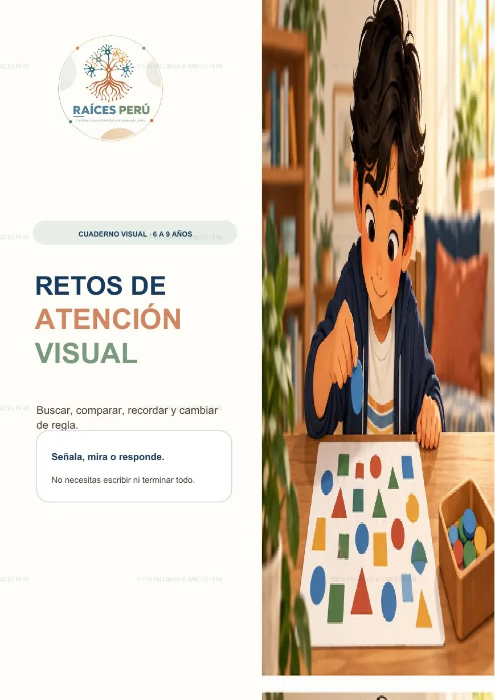
6 a 9 años · catálogo
Sexta colección visible
Una guía para comprender procesos, elegir estrategias y observar evidencias sin reducir la memoria a una puntuación ni a un único ejercicio.
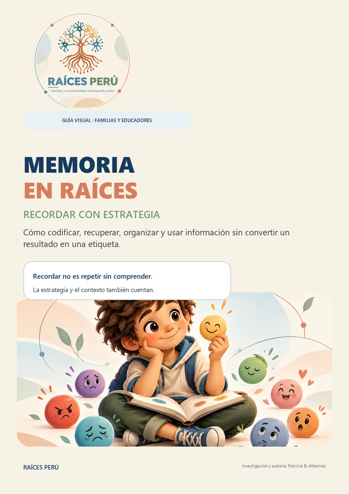
Familias y educadores
Nueva ruta RAÍCES
Una guía por edades para volver al vínculo, comprender lo ocurrido y elegir una respuesta que cuide a la persona y al límite.

Información pública y servicio personalizado
La orientación general, las fuentes oficiales y las fichas básicas de trámite se mantienen gratuitas. La revisión del caso, la organización documental y los planes personalizados para casa o escuela se cotizan según alcance.
Qué institución corresponde, qué documentos suelen solicitar y enlaces oficiales verificables.
Abrir la rutaOrganización de necesidades, objetivos, apoyos y pasos de seguimiento. Se define alcance y precio antes de iniciar.
Solicitar propuestaCómo funciona
La persona elige tema y describe una necesidad concreta.
RAÍCES define alcance, plazo, entregables y precio antes de trabajar.
La personalización empieza después de aceptar la propuesta y confirmar el pago.
El material se envía al correo acordado; WhatsApp puede usarse para coordinar.
Solicitud breve y respetuosa
Pedimos solo datos básicos para responder. No envíe diagnósticos, informes clínicos, documentos de identidad ni información sensible en este primer contacto.
Criterio RAÍCES
Los manuales ofrecen orientaciones y posibilidades; no prometen resultados, no reemplazan evaluaciones ni sustituyen a profesionales. Escuchamos antes de intervenir, observamos antes de asumir y ajustamos cada propuesta al contexto.